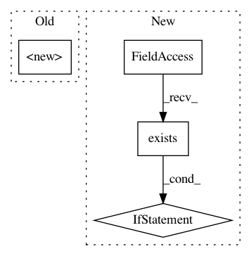

36b77c018acc862de322765a5f01e9214717febc,mltsp/custom_feature_tools.py,,extract_feats_in_docker_container,#Any#Any#,425
Before Change
volumes={cfg.PROJECT_PATH: ""})["Id"]
// Start container
client.start(cont_id,
binds={cfg.PROJECT_PATH: {"bind": cfg.PROJECT_PATH,
"ro": True}})
// Wait for process to complete
client.wait(cont_id)
After Change
// Use symlink if one was created (in which case this is probably
// being run in a Disco worker)
if os.path.exists(cfg.PROJECT_PATH_LINK):
proj_mount_path = cfg.PROJECT_PATH_LINK
else:
proj_mount_path = cfg.PROJECT_PATH
// Create container
cont_id = client.create_container(
image="mltsp/base_disco",
command="python {}/run_script_in_container.py --{} --tmp_dir={}".format(
proj_mount_path, "extract_custom_feats", tmp_data_dir),
In pattern: SUPERPATTERN
Frequency: 4
Non-data size: 4
Instances
Project Name: cesium-ml/cesium
Commit Name: 36b77c018acc862de322765a5f01e9214717febc
Time: 2015-05-15
Author: a.crellinquick@gmail.com
File Name: mltsp/custom_feature_tools.py
Class Name:
Method Name: extract_feats_in_docker_container
Project Name: jhfjhfj1/autokeras
Commit Name: 3a181c8d229d3f45d6457cd329d2336b07b2330b
Time: 2019-02-08
Author: jhfjhfj1@gmail.com
File Name: autokeras/pretrained/voice_generator/voice_generator.py
Class Name: VoiceGenerator
Method Name: __init__
Project Name: cesium-ml/cesium
Commit Name: 90056e651a78def30b50482a00a879e6ba9efc16
Time: 2015-05-12
Author: a.crellinquick@gmail.com
File Name: mltsp/custom_feature_tools.py
Class Name:
Method Name: extract_feats_in_docker_container